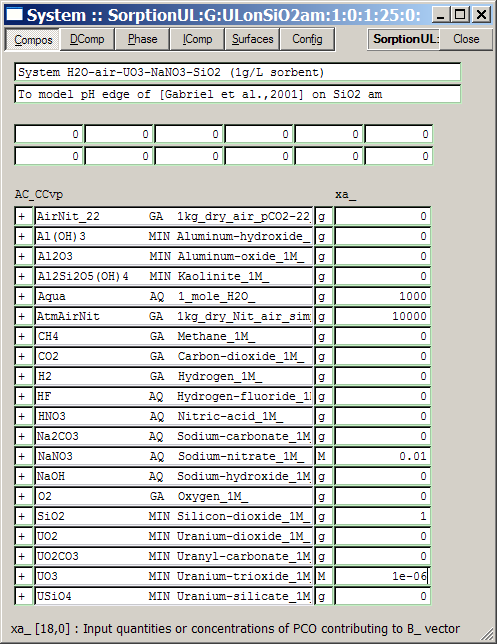

GEM-Selektor version 2-PSI GEM-Selektor version 2-PSI
GEM-Selektor version 2-PSI GEM-Selektor version 2-PSIPrevious Page Back to Start Page
(44) Creating a chemical system definition for GEM surface complexation modelling
Back to the "Computation of Equilibria" mode of GEMS, we get into the "Modelling Project" dialog:
Here, click
on
the "Single-System Equilibria" button to create your first system
definition
for sorption modelling.
We are going to start with a single calculation for adsorption of
uranyl on amorphous silica, so set the following fields in the new
SysEq record
key and press "Ok" when finished:
The "Remake"
dialog will appear; If it looks like that shown below, simply click on
the "Ok"
button to proceed.
Attention: If the dialog below does not look correctly ('+' in position [0,9] in the upper row) then you probably forgot to select "Sorption" or some chemical elements in the "Elements Dialog". If this happened, click "Ok" anyway, then close all dialogs, quit GEM-Selektor, find in "/projects" the "/SorptionUL" subdirectory, delete it completely, start GEM-Selektor and try creating the modelling project again.
Now, the "Compos" page of the "System" window should be visible. In
that window, you need to enter the "recipe" for the bulk chemical
composition
of the system. Enter also both comment lines as shown below. The recipe
is:
1000 g water + 10 kg of air "AtmAirNit" + 0.01 mol NaNO3
+ 1 g SiO2 + 1e-6 mol UO3.
After you
have
entered the recipe, the "Compos" page should look like this:

Next, switch to the "Single Thermodynamic System" dialog, where you
should see the sorption phase "SiO2_1sTLM" in the
list. Expand it and you will see several surface species, the >OH@
surface group, and the solid sorbent Qtz (quartz):
As we want to
model
the sorption of uranyl on amorphous silica which is ca 11 times more
soluble than quartz, enter a +5890 J/mol increment for quartz sorbent
in the "G0
corr" column (to enter data, right-mouse click on the requested field).
Also, switch off two single-component phases "Quartz"
and
"Silica-amorph" in the "On/off" column, as shown
above (this is necessary in order to prevent their appearance instead
of the SiO2,am sorbent in the equilibrium state). When ready,
click on the "Calculate BCC"  toolbar button to check whether the system recipe has been
entered correctly. You should get the following warning dialog:
toolbar button to check whether the system recipe has been
entered correctly. You should get the following warning dialog:
It actually
says that nothing was specified for the total amount of aluminum and
fluorine in
this system. As we did not intend to consider Al and F in this
calculation,
simply click on
the "Check/Ok" button; this will switch the independent components Al
and F with
all their species off the chemical system definition.
Now, close
the
"System" window and click on the "Calculate the equilibrium
state"
 toolbar
button to compute your first surface complexation
equilibrium using GEM. As usual, you should see the progress
dialog running.
toolbar
button to compute your first surface complexation
equilibrium using GEM. As usual, you should see the progress
dialog running.
When it says
"Converged" (as above), click on the "Accept" button to save
calculations into GEMS database.
Now, you can
examine in detail the calculated aqueous and surface speciation. But,
before doing that, it is wise to check calculated volume of aqueous
phase and mass of
the sorbent (amorphous silica) in order to make sure that we have the
solid/liquid (S/L) ratio indeed close to 1 g/L. To do that, click on
the "Explore GEM
results"  toolbar button; this opens
the "EqDemo" window, on which you should select the "EqPh" page:
toolbar button; this opens
the "EqDemo" window, on which you should select the "EqPh" page:
The first
number in the phVol column is the volume of
aqueous phase in cm3; clearly, it should be made ca. 3.266 cm3
smaller to get it close to 1 L. The third number in the phM
column is the mass of the sorbent in the sorption phase; it needs to be
made ca. 0.11 g greater (this amount of SiO2 exists at
equilibrium
in dissolved form). The Aalp column shows
the
(correct) specific surface area of the amorphous silica sorbent (169 m2/g).
To make
necessary corrections, close the "EqDemo" window and open the "System"
window (using the "Set BCC"  toolbar
button). On the "Compos" page, make the necessary corrections in the
recipe (set 1.11 g SiO2 and 996.734 g Aqua,
the numbers adjusted by our "trial-and-error" consideration), and
re-calculate the equilibrium state by clicking on the "Calculate the
equilibrium
state"
toolbar
button.
Check again the "EqPh" page of the
"EqDemo" window to make sure that you get very close to 1000 cm3
of aqueous phase and 1.0 g of the sorbent; re-adjust input and
re-calculate if necessary.
toolbar
button). On the "Compos" page, make the necessary corrections in the
recipe (set 1.11 g SiO2 and 996.734 g Aqua,
the numbers adjusted by our "trial-and-error" consideration), and
re-calculate the equilibrium state by clicking on the "Calculate the
equilibrium
state"
toolbar
button.
Check again the "EqPh" page of the
"EqDemo" window to make sure that you get very close to 1000 cm3
of aqueous phase and 1.0 g of the sorbent; re-adjust input and
re-calculate if necessary.
You are ready
now to examine the calculated surface speciation and the setup of
the sorption phase.
Back to main GEMS-PSI page